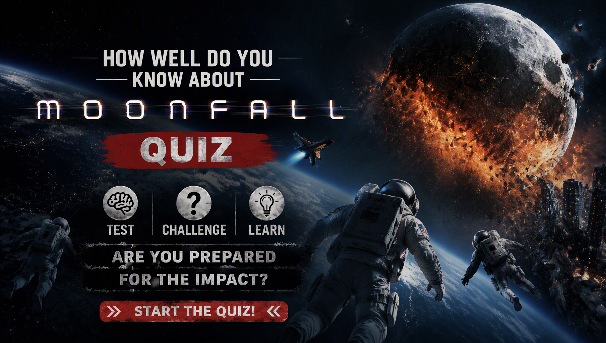

DISASTER • MOVIE TRIVIA
Moonfall Quiz
Think you know Moonfall? Test your knowledge of Brian Harper, K.C. Houseman, Jo Fowler, Sonny, the mysterious Moon, the Swarm and the disaster that threatens Earth.
One answer is correct for each question. Choose carefully and see how well you remember the characters, events, technology and secrets of Moonfall.
This quiz contains major story details from Moonfall.

ABOUT THE QUIZ
The Moonfall Movie Quiz is a 25-question trivia challenge for fans of the 2022 science-fiction disaster film Moonfall. The movie follows former astronaut Brian Harper, NASA executive Jo Fowler and conspiracy theorist K.C. Houseman as they discover that the Moon is not what humanity believed it to be.
The questions cover Brian Harper, Jo Fowler, K.C. Houseman, Sonny Harper, Doug Davidson, Holdenfield, Alan Marcus and other characters connected to the story.
Some questions test major story events, while others focus on the Moon's mysterious nature, the Apollo discoveries, the Swarm, the final mission and the secrets hidden inside the Moon.
Moonfall Movie Details
Title: Moonfall
Release Year: 2022
Format: Science-fiction disaster film
Main Characters: Brian Harper, Jo Fowler, K.C. Houseman, Sonny Harper and General Doug Davidson.
The story begins with a mysterious event during a 2011 space mission. Years later, an unexplained force causes the Moon to leave its normal orbit and move dangerously closer to Earth. As governments struggle to understand the threat, Brian, Jo and K.C. uncover a hidden secret about the Moon and humanity's distant past.
HOW THE QUIZ WORKS
The quiz contains 25 questions. Every question has four possible choices, but only one answer is correct. Read each question carefully and select the answer you believe is correct before continuing.
Each correct answer gives you 1 point, while an incorrect answer gives you 0 points. With 25 questions in total, your number of correct answers is converted into a final percentage out of 100%.
Your final result represents your knowledge of Moonfall based on your performance. A high score means you successfully remembered many of the characters, events, discoveries and details featured in the movie.
Quiz Navigation
Starting the quiz
Select START QUIZ on the opening screen to begin. The first question will appear with four possible answers.
Selecting an answer
Read the question and all four choices before making your decision. Select the answer you believe is correct and continue through the quiz.
Next and Back buttons
Use Next to move forward through the questions. The Back button allows you to return to an earlier question and review your selection. Your current question number and progress are displayed as you move through the quiz.
Finishing the quiz
Continue until you have answered all 25 questions. When you reach the end, submit your answers to finish the quiz and view your final percentage and Moonfall Movie Knowledge result.
Try Again and Challenge Friends
After viewing your result, select TRY AGAIN to replay the quiz and attempt a higher score. You can also use SHARE MY RESULT or CHALLENGE YOUR FRIENDS to share your result and challenge other fans.
FAQ
How many questions are in the quiz?
There are 25 questions in total, and every question has four possible choices.
What is the maximum score?
The maximum result is 100%. Each correct answer contributes 1 point before the score is converted into a percentage.
What topics are covered?
The quiz focuses on Moonfall, including Brian Harper, K.C. Houseman, Jo Fowler, Sonny, the Apollo discoveries, the Swarm, the Moon's artificial structure and the final mission.
What does my score mean?
Your percentage shows how many of the 25 Moonfall questions you answered correctly. A higher score indicates stronger knowledge of the characters, events and details covered in the movie.
Can I take the quiz again?
Yes. Select TRY AGAIN after completing the quiz to start another attempt and try to improve your score.
Can I challenge my friends?
Yes. Select CHALLENGE YOUR FRIENDS after completing the quiz to share the challenge and see whether your friends can beat your score.
Spoiler Warning
This quiz contains spoilers for Moonfall. Questions may reveal character relationships, the 2011 mission, classified Apollo discoveries, the nature of the Swarm, the Moon's artificial structure and other important details from the film.
If you have not watched Moonfall, consider watching the movie before taking the quiz to avoid having important story details spoiled.